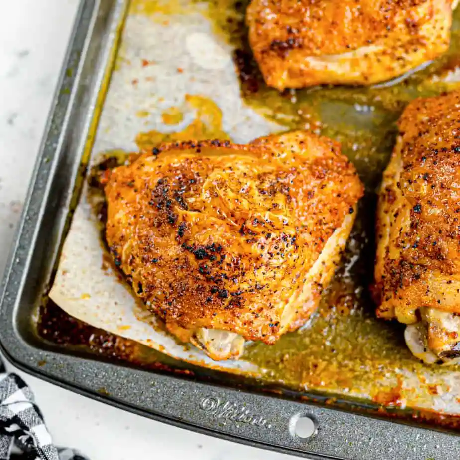

Chicken Thigh Recipe

Description
Chicken, one of America's staples for cheap, tasty protein! Easy to prep and delicious!
Let's dive in.
Ingredients
- Chicken thighs
- Salt
- Pepper
- Paprika
- Brown sugar
- Garlic powder
Steps
- Preheat oven to 425°F
- Pound chicken to 1.5 cm at thickest part
- Mix seasoning
- Line tray with foil, pat chicken dry and add to tray, sprinkle one side with seasoning,
flip then sprinkle the other side
- Bake for 30-35 minutes (25 for boneless) or until internal temperature is 165°F
- Remove from oven and immediately transfer chicken to serving plates
- Wait 3-5 minutes before serving